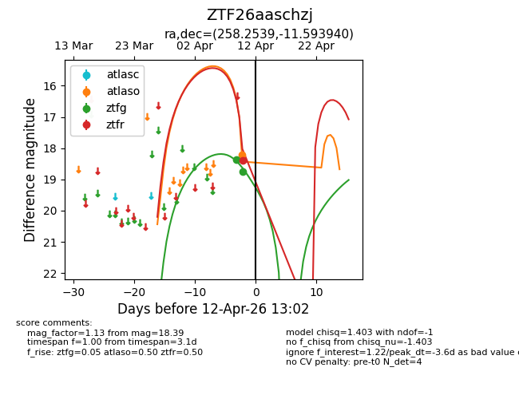
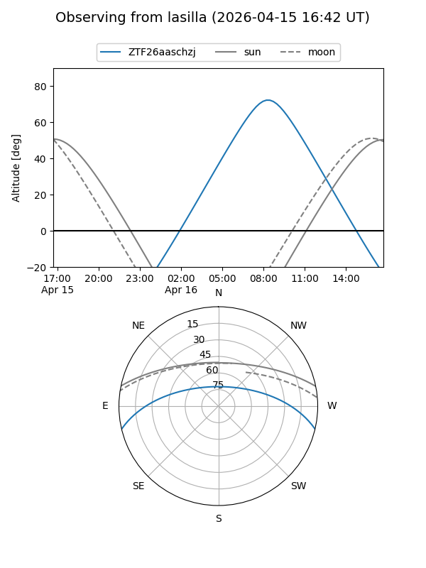
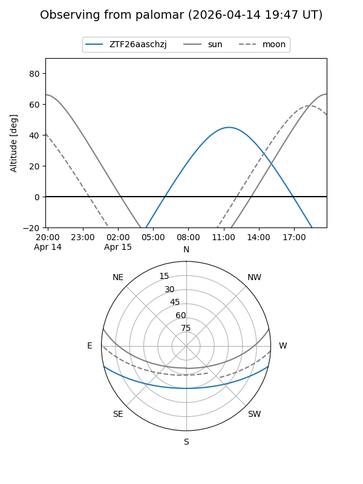
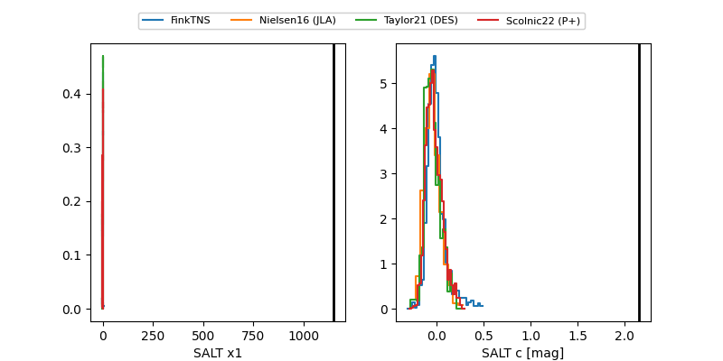

ZTF26aaschzj
Target ZTF26aaschzj at 2026-04-12 13:13
Aliases and brokers:
FINK: link
Lasair: link
ALeRCE: link
alt names
ZTF26aaschzj (ztf,fink_ztf)
Coordinates:
equatorial (ra, dec) = 258.2539,-11.59394
equatorial (HMS+DMS) = 17:13:00.94,-11:35:38.18
galactic (l, b) = (10.6557,+15.74532)
Flags:
Photometry:
last atlaso=18.22, ztfg=18.74, ztfr=18.39
1 atlaso, 2 ztfg, 1 ztfr detections
Lightcurve

Visibility


Additional plots
